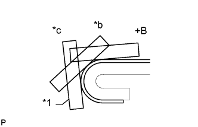

ДЕКОРАТИВНАЯ ОТДЕЛКА (для 3-дверных моделей) > УСТАНОВКА |
| Параметр / Устройство | Температура |
| Кузов автомобиля | 40-60°C (104-140°F) |
| Лента декоративной отделки | 20–30°C (68–86°F) |
| 1. УКАЗАНИЯ ПО ВЫПОЛНЕНИЮ РЕМОНТА |
Очистите поверхность кузова автомобиля.
С помощью нагревательной лампы разогрейте поверхность кузова.
Удалите остатки клейкой ленты чистящим средством.
Температура деталей при установке.
Если температура окружающего воздуха ниже 15°C (59°F), перед установкой разогрейте поверхность кузова автомобиля (установочную поверхность рамы двери) и ленту до температуры 20-30°C (68-86°F) с помощью нагревательной лампы. Если температура окружающего воздуха превышает 35°C (95°F), перед установкой следует охладить поверхность кузова автомобиля (установочную поверхность рамы двери и т. д.) и ленту до температуры 20-30°C (68-86°F).
Перед установкой.
Убедитесь в отсутствии загрязнений на и вокруг поверхности кузова автомобиля в месте установки ленты (установочной поверхности рамы двери и т. д.), а также проверьте гладкость поверхности. Если поверхность является неровной или загрязненной, при прижатии ленты к поверхности под ленту попадет воздух, и внешний вид ухудшится.
Ключевые моменты при работе со светомаскировочной лентой.
Лента легко сгибается и скручивается. Поэтому, чтобы она была ровной, храните ее между листами картона или подобного материала в сухом месте.
Рекомендации по закреплению ленты (порядок применения резинового скребка и порядок закрепления для плоских поверхностей).
Во избежание появления воздушных пузырьков при нанесении отрезок ленты, подлежащий приклеиванию, необходимо приподнять над поверхностью кузова автомобиля так, чтобы клейкий слой ленты не соприкасался с ней. Наклоните резиновый скребок под углом 40-50° (при движении вперед) или 30-45° (при оттягивании) по отношению к поверхности кузова автомобиля и прижимайте ленту к поверхности с усилием 20-30 Н (2-3 кгс), двигая скребок с постоянной медленной скоростью 3-7 см (1,2-2,8 дюйма) в секунду.

| *A | Нажатие | *B | Оттягивание |
| *1 | Резиновый скребок | *2 | Лента декоративной отделки |
| *3 | Прокладочная бумага | - | - |
| *a | Разрез | *b | Сторона без обивки |
| *c | Сторона с обивкой | - | - |
|  |
Рекомендации по закреплению ленты (порядок применения резинового скребка и порядок закрепления для поверхностей окантовки).
Прижимать ленту к таким поверхностям достаточно сложно, поэтому процедура наклеивания выполняется в несколько этапов, как показано на рисунке. Пальцем или ручкой резинового скребка медленно нанесите ленту на участок окантовки автомобиля, особенно, в случае маленькой окантовки.
| *1 | Резиновый скребок |
| *a | Первый |
| *b | Второй |
| *c | Третий |
Рекомендации по закреплению ленты (порядок применения резинового скребка и порядок закрепления для углов).
Снимите отслаивающуюся бумагу и аккуратно наклейте ленту пальцами.
Нагрейте ленту с помощью нагревательной лампы перед наложением на угол и медленно наложите ее, чтобы избежать сморщивания ленты и добиться желаемого эстетического вида.
Проверка после установки.
После завершения процедуры нанесения ленты убедитесь, что она наклеена аккуратно. Если лента наложена неаккуратно, наложите новую ленту.
| 2. УПЛОТНИТЕЛЬ ДЕКОРАТИВНУЮ ПОЛОСУ ЛЕВОГО КРЫЛА |
Совместите вырезы наклеиваемого листа новой ленты декоративной отделки с линиями кромки переднего крыла, как показано на рисунке, и наложите ленту.
Удалите наклеиваемый лист с ленты декоративной отделки.
| *a | Вырез |
| *b | Линия кромки переднего крыла |
| 3. УСТАНОВИТЕ ЛЕНТУ ЛЕВОЙ ПЕРЕДНЕЙ БОКОВОЙ ПАНЕЛИ |
Совместите вырезы наклеиваемого листа новой ленты декоративной отделки с линиями кромки передней двери, как показано на рисунке, и наложите ленту.
Удалите наклеиваемый лист с ленты декоративной отделки.
| *a | Вырез |
| *b | Линия кромки переднего крыла |
| 4. УСТАНОВИТЕ ВЕРХНЮЮ ЗАДНЮЮ ЛЕНТУ ЛЕВОЙ ЗАДНЕЙ БОКОВОЙ ПАНЕЛИ |
Совместите вырезы наклеиваемого листа новой ленты декоративной отделки с линиями кромки задней боковой панели, как показано на рисунке, и наложите ленту.
Удалите наклеиваемый лист с ленты декоративной отделки.
| *a | Вырез |
| *b | Линия кромки переднего крыла |
| 5. УСТАНОВИТЕ ЛЕНТУ ЛЕВОЙ ЗАДНЕЙ БОКОВОЙ ПАНЕЛИ |
Совместите вырезы на правой стороне наклеиваемого листа новой ленты декоративной отделки с линией кромки задней боковой панели и вырез на левой стороне с задней боковой панелью и углублением под топливную крышку, как показано на рисунке, и наложите ленту.
| *a | Вырез |
| *b | Линия кромки задней боковой панели |
| *c | Задняя боковая панель и углубление под топливную крышку |